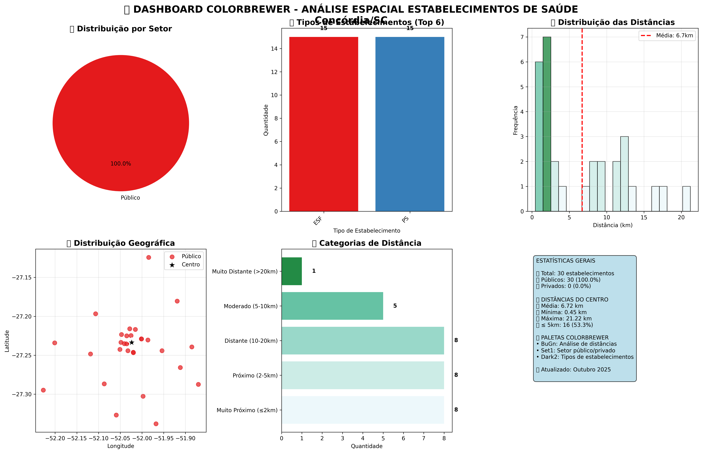

Dashboard Explicativo - Saúde Pública Concórdia/SC Outubro 2025
Este painel apresenta os principais gráficos, tabelas e mapas da análise espacial dos estabelecimentos de saúde de Concórdia/SC, com explicações detalhadas para cada visualização.
1. Estatísticas Gerais
| Total de Estabelecimentos | Públicos | Privados | Cobertura Georreferenciada |
|---|---|---|---|
| 30 | 30 (100%) | 0 (0%) | 100% |
Interpretação: Todos os estabelecimentos mapeados são públicos, com cobertura total de coordenadas válidas, garantindo precisão na análise espacial.
2. Acessibilidade
| Distância Média | Distância Mínima | Distância Máxima | Desvio Padrão |
|---|---|---|---|
| 6,72 km | 0,45 km | 21,22 km | 5,91 km |
Interpretação: A maioria dos estabelecimentos está próxima ao centro urbano, facilitando o acesso da população. Apenas 1 unidade está a mais de 20 km do centro.
3. Distribuição por Proximidade
| ≤ 2km | ≤ 5km | ≤ 10km | > 20km |
|---|---|---|---|
| 8 (26,7%) | 16 (53,3%) | 21 (70,0%) | 1 (3,3%) |
Interpretação: Mais da metade dos estabelecimentos está a menos de 5 km do centro, indicando boa cobertura urbana.
4. Por Tipo de Estabelecimento
| Tipo | Quantidade | Dist. Média | Dist. Min | Dist. Max | Públicos |
|---|---|---|---|---|---|
| ESF | 15 | 2,7 km | 0,5 km | 9,2 km | 15 |
| PS | 15 | 10,7 km | 1,5 km | 21,2 km | 15 |
Interpretação: As ESFs estão mais próximas do centro, enquanto os PS estão distribuídos em áreas mais periféricas, ampliando o alcance territorial.
5. Por Quadrante Geográfico
| Quadrante | Estabelecimentos | Dist. Média | Públicos | % Público |
|---|---|---|---|---|
| NE | 7 | 5,1 km | 7 | 100% |
| NW | 8 | 4,7 km | 8 | 100% |
| SE | 8 | 9,1 km | 8 | 100% |
| SW | 7 | 8,0 km | 7 | 100% |
Interpretação: Todos os quadrantes da cidade possuem cobertura pública, com distâncias médias variando conforme a densidade populacional e localização dos bairros.
6. Visualização dos Dashboards

Este dashboard apresenta o panorama geral, mapas interativos e camadas temáticas, facilitando a análise visual da distribuição dos estabelecimentos.

Versão simplificada do dashboard, destacando apenas os principais indicadores e mapas básicos para consulta rápida.